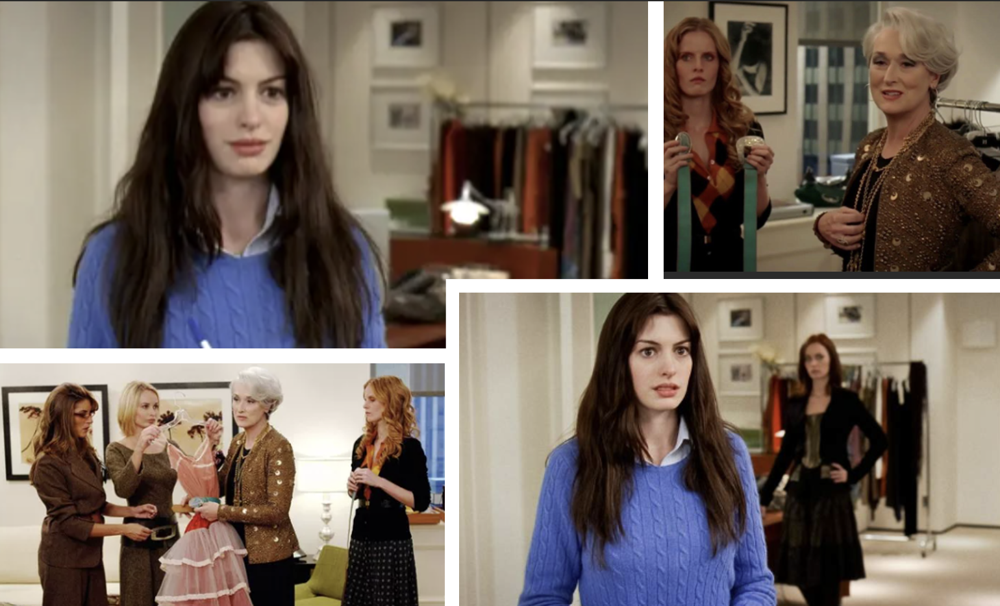
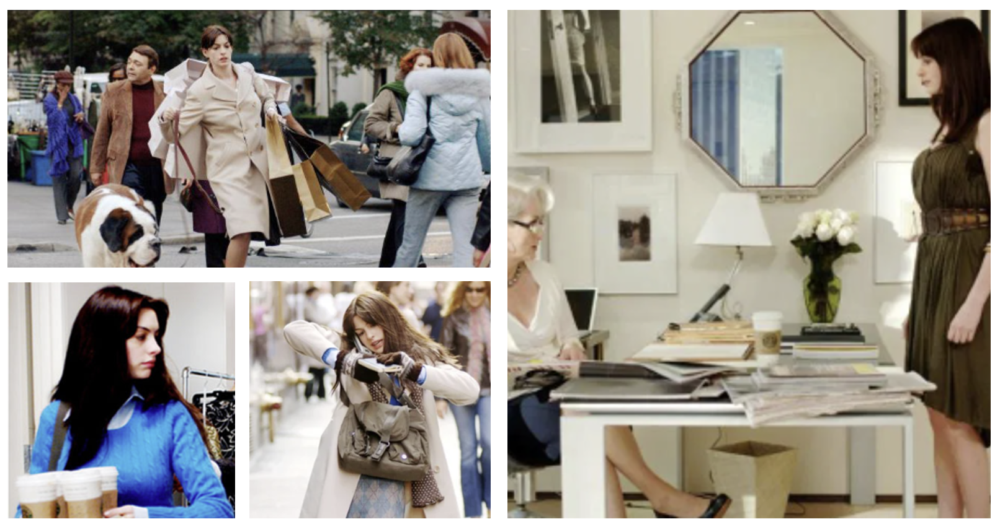

Introdução
O aclamado filme "O Diabo Veste Prada" (2006) não é apenas um ícone da cultura pop; é também um estudo de caso fascinante sobre as relações de trabalho. Através da jornada de Andrea Sachs sob o comando da exigente Miranda Priestly, podemos identificar inúmeras situações que dialogam diretamente com a Consolidação das Leis do Trabalho (CLT) no Brasil. Esta análise tem como objetivo conectar cenas do filme a artigos específicos da CLT, para demonstrar, de forma didática, a aplicação (ou a falta dela) das normas trabalhistas.
Jornada Abusiva
Uma das violações mais evidentes no filme é a jornada de trabalho exaustiva e sem limites imposta a Andrea. As demandas constantes, fora do horário de expediente, ilustram um desrespeito claro as normas que regulam a duração do trabalho, o direito a horas extras e os períodos de descanso.
Cenas-Chave
- Andrea trabalhando até tarde, nos fins de semana e atendendo ligações a qualquer hora.
- A exigência de tarefas "impossíveis" fora do expediente, como obter o manuscrito inédito de Harry Potter.
Análise à Luz da CLT
- Art. 58 e 59: A jornada excede as 8h diárias e 44h semanais, sem o devido pagamento de horas extras.
- Art. 66 e 67: Os intervalos de 11h entre jornadas e o descanso semanal de 24h são sistematicamente violados.
Conclusão da Análise: A rotina na Runway ignora os limites legais, submetendo a funcionária a um regime de "plena disponibilidade", o que é ilegal e passÃvel de ações trabalhistas.
Assédio Moral
A conduta de Miranda Priestly é um exemplo de assédio moral. A perseguição, humilhação sistemática e a criação de um ambiente de trabalho hostil visam desestabilizar emocionalmente os funcionários, o que é uma grave violação da dignidade humana.
Cenas-Chave
- Humilhação pública de Andrea por sua roupa (a cena do suéter "azul cerúleo").
- Imposição de tarefas vexatórias ou destinadas ao fracasso.
- Ameaças veladas e constantes de demissão.
Análise à Luz da CLT
- Art. 483: O tratamento com rigor excessivo dão ao empregado o direito à rescisão indireta.
- Constituiçãoo Federal (Art. 1º): O assédio fere o princípio da dignidade da pessoa humana.
Conclusão da Análise: A gestão baseada no medo configura um claro quadro de assádio moral, passável de indenização e de rescisão indireta do contrato de trabalho.
Desvio de Função
Andrea é contratada como assistente, mas suas atribuições extrapolam a esfera profissional, invadindo a vida pessoal de sua chefe. A exigência de tarefas domésticas e particulares descaracteriza o contrato de trabalho original.
Cenas-Chave
- Buscar o café de Miranda todas as manhãs.
- Levar as roupas da chefe à lavanderia.
- Cuidar de tarefas domésticas e pessoais das filhas de Miranda.
Análise à Luz da CLT
- Art. 468: A exigência de tarefas alheias ao contrato é uma alteração unilateral e lesiva.
- Art. 456: Tarefas domésticas e pessoais não são compatíveis com a função de assistente.
Conclusão da Análise: O poder diretivo do empregador tem limites. A situação de Andrea poderia ensejar um pedido de plus salarial por acúmulo/desvio de função.
Conclusão Geral
"O Diabo Veste Prada" É uma ficção, mas ilustra de maneira poderosa como um ambiente de trabalho tóxico pode violar direitos básicos. A CLT existe para equilibrar a relação entre capital e trabalho, garantindo que a busca por resultados não se sobreponha à dignidade, à saúde e aos direitos do empregado.